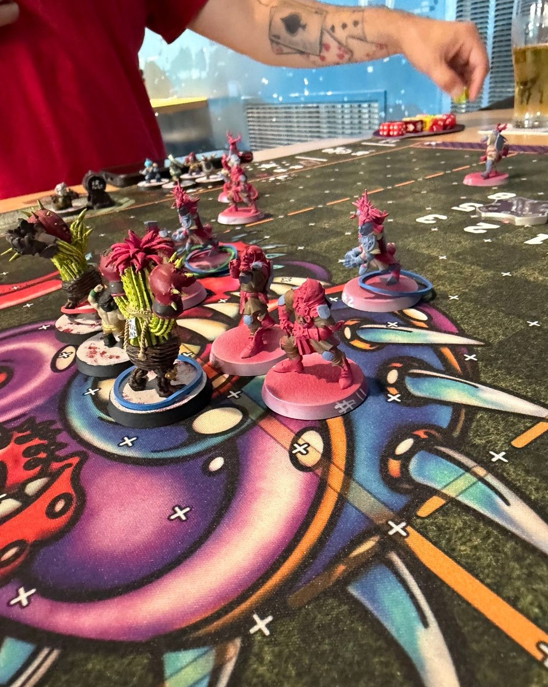
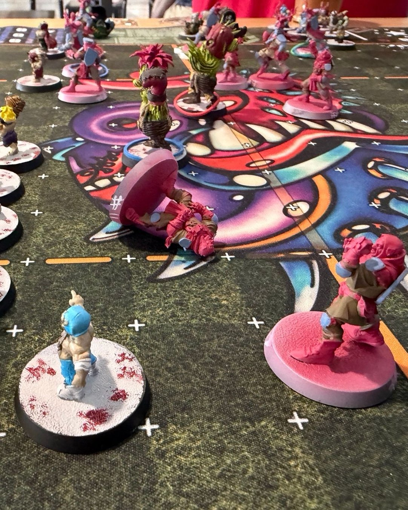
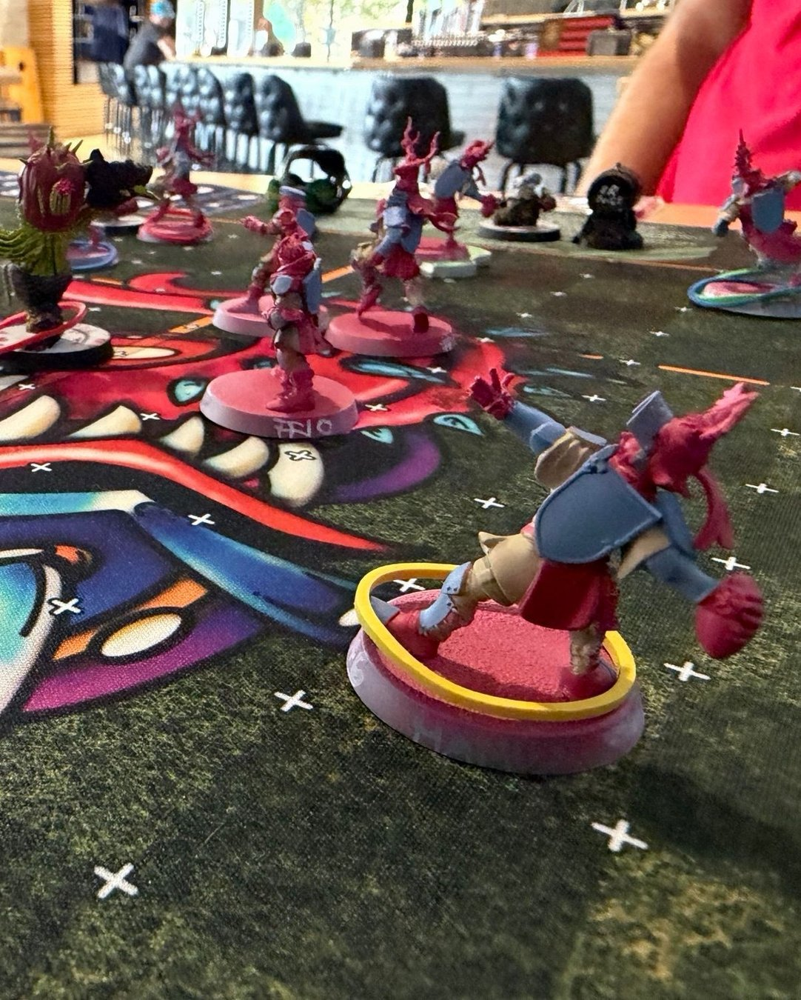
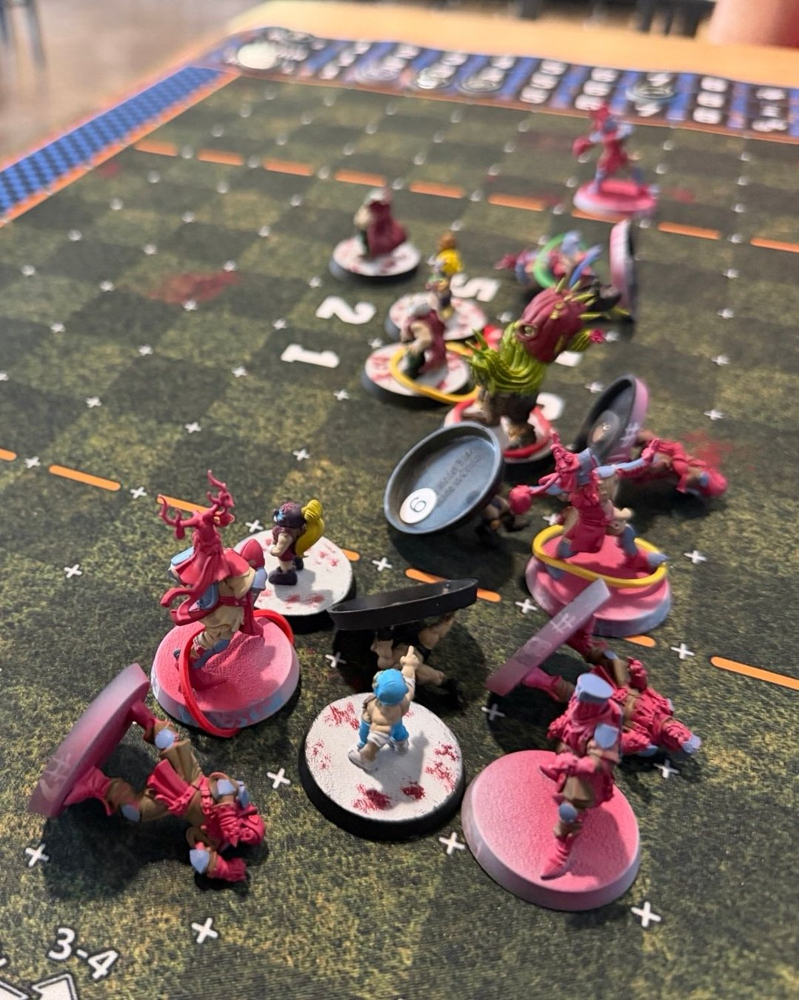

Grenadiers 2–0 Oak City Lucharitos
🏈 THE HOLY HAND GRENADIERS HAVE TAKEN THE FIELD! 🐇💥
After painting Blood Bowl teams and talking about actually playing for way too long, I finally joined a league, and Matchday 1 was also my first ever game of Blood Bowl.
And somehow… the Holy Hand Grenadiers came away with a 2-0 win over the Oak City Lucharitos Halflings! A successful first outing for Bretonnia, with all the chaos, questionable decisions, and tiny-player violence I was hoping for.
The minis were VERY much still WIP for this one (basically base coats and enough color to tell everyone apart 😂). I’m planning to keep painting them throughout the season, so you’ll get to watch the team slowly get prettier while Blood Bowl inevitably makes their lives considerably worse.
First ever match. First league match. First win. First clean sheet.
The quest for the Grail begins… NI! 🏆🐇
#BloodBowl #BloodBowlCommunity #MiniaturePainting #WIPMiniatures #TabletopGaming